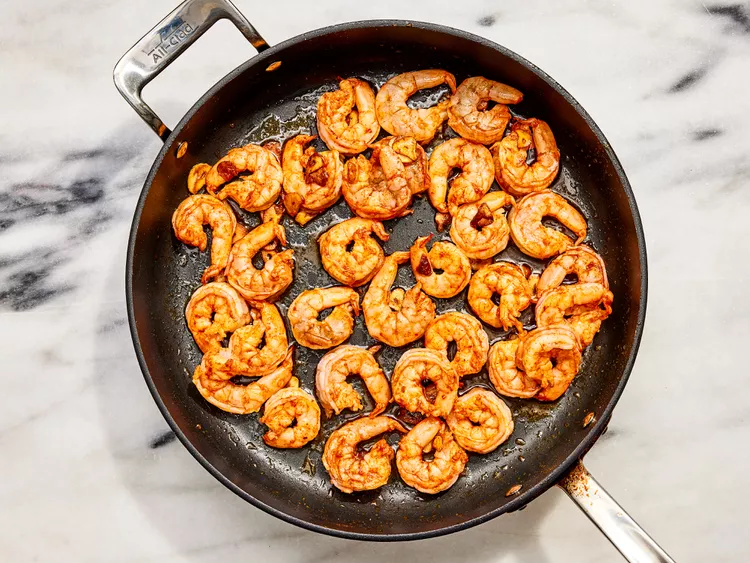

A quick and easy Spanish recipe for Spanish Garlic Shrimp (Gambas al Ajillo)
Gambas al ajillo are on every Spanish restaurant menu — for good reason! It's a dish of shrimp cloaked in garlic-infused olive oil with smoky hints of paprika and a touch of sweetness from sherry. Make sure you have all your ingredients together before you head to the stove since, start to finish, this cooks in mere minutes. It's great for a tapas party since you can prep everything ahead of time. Just spoon the shrimp and sauce over toasted bread and sprinkle more cayenne and parsley on top to enjoy.
1 pound frozen large shrimp (21-25 count) - thawed, peeled, and deveined
1 teaspoon hot smoked paprika (Optional)
kosher salt to taste
4 cloves garlic
¼ cup extra-virgin olive oil
2 tablespoons dry sherry
1 tablespoon chopped Italian flat-leaf parsley
Directions
Gather all ingredients.
Place shrimp in a large bowl and season with paprika and kosher salt; mix well to coat.
Slice garlic into thin slices. Heat oil in a skillet over medium heat; add garlic and cook until golden, about 2 minutes.
Add shrimp and increase heat to high. Toss and turn shrimp with tongs until starting to curl but still undercooked, about 2 minutes.

Pour in sherry. Cook, stirring continuously, until sauce comes up to a boil and shrimp is cooked through, about 1 minute more.